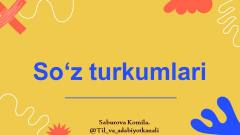

STOʻzbek tilidagi mustaqil va yordamchi soʻz turkumlari haqida oʻquv qoʻllanma.
Ushbu qoʻllanma oʻzbek tilidagi mustaqil va yordamchi soʻz turkumlarini tizimli ravishda tushuntiradi. Unda ot, olmosh, ravish, bogʻlovchi va koʻmakchilar kabi soʻz turkumlarining vazifalari va xususiyatlari yoritilgan.